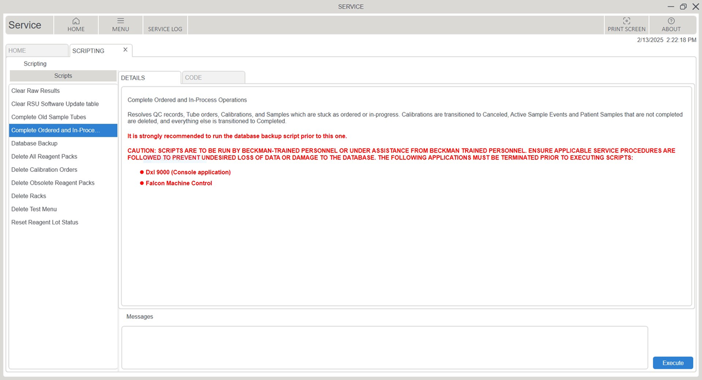

Executing Scripts Using the Service App
This topic includes information about how to execute scripts using the Service App.
| Table of Contents |
|---|
| Scripts |
| The Scripting Page |
| Executing SQL Database Scripts |
| Executing the Delete Test Menu Script |
Scripts
| Script | Description | When to Perform | More Information |
|---|---|---|---|
| Clear Raw Results | Clears entries from the RawResults tables in the ICE_SAMPLES_DB that are older than 30 days. | If RawResults table gets too large and DB size warnings start to occur, this script can clear data that is not needed. | |
| Clear RSU Software Update table | Clear all entries from SoftwareUpdate table of the RSU database. | Used if the Delete Test Menu script is used and an installation of the same or lower RAPID version is needed through RSU. | |
| Complete Old Sample Tubes | Sets old samples as complete. | If there are samples that are older than 24 hours that have not been completed or need to be cleared out | |
| Complete Ordered and In-Process Operations | Resolves QC records, tube orders, calibrations, and samples that are stuck as ordered or in-progress. Calibrations are transitioned to Cancelled, active sample events and patient samples that are not completed are deleted, and everything else is transitioned to Completed. | Used when samples are stuck "in progress" and cannot be removed | |
| Database Backup | Backs up the ICE, Samples, QC, RMS and ALIGNMENTS database tables to the D:\backups\db_backups folder | Whenever a backup is needed.
Note: Backups are taken automatically during the software installation process.
|
Backing Up the Databases Using the Service App |
| Delete All Reagent Packs | Removes all reagents from the database. | Use only under direction from Technical Support. | |
| Delete Calibration Orders | Removes calibration records, racks, tubes, and snooze records from the database. | When calibration racks or tubes appear to be "stuck in progress." | |
| Delete Obsolete Reagent Packs | Removes reagents with statuses Unloaded, Depleted, Unusable or Discarded from the database. | When discarded or "phantom" reagent packs remain present in the interface. | |
| Delete Racks | Deletes all racks from the Samples database and calibration racks from the ICE DB database | Used in conjunction with Complete Ordered and In-Process Operations to ensure racks are released. Racks will need to be set up again after completion of this script. | |
| Delete Test Menu |
|
When unable to load new RAPID/APF files, this script will delete all currently loaded tests to allow the user to load new tests onto a "blank" system. | Executing the Delete Test Menu Script |
| Reset Reagent Lot Status | This updates the reagent lot status for on-board reagent lots and active off-board reagent lots to not active | When unable to order a calibration due to no active reagent lot or the creation of calibration orders that will never run on a removed reagent lot. |
The Scripting Page
Use the Scripting page to execute scripts.
In the Service App go to to open the Scripting page.

When you select a script in the Scripts list, the Details tab will describe what the script will do. You can select Execute to run the script. The Messages box will confirm whether the script executed successfully.
Executing SQL Database Scripts
Perform this procedure to execute all SQL scripts except the Delete Test Menu script.
- Be sure the system is not actively processing tests.
- Close the Console App and Machine Control App.
Note: To shut down the Machine Control App, you might need to make it visible. See Enabling and Disabling Access to the Machine Control App for more information.
- In the Service App go to to open the Scripting page.
- You must first backup the database.
- Select the Database Backup script.
- Select Execute.
- After you have backed up the database, select another script.
Warning: Before you execute the Delete All Reagent Packs script, be sure any on-board punctured reagent packs are discarded as the counts will be re-set and may lead to system errors/inaccurate results.
- Select Execute. The Messages field will indicate the result of executing the script.
- Re-start the applications previously shut down in the above step. Confirm the symptom for which the script was run has been resolved and resume operation.
Note: Must perform an RSM remap when initializing if Delete All Reagent Packs or Delete Obsolete Reagent Packs scripts were executed.
Executing the Delete Test Menu Script
Perform this procedure to execute the Delete Test Menu (ClearTestMenu.exe) script.
The Delete Test Menu script in the Service App completely deletes all APF data. It removes tests, rules, panels, and QC settings from DxI 9000 software, and it removes sample and QC database data by user request. It also removes RAPID updates from the RSU database.
Warning: Executing this script will delete the following items. DO NOT execute this script unless absolutely certain it must be done.
- All loaded tests (RAPIDs/APFs)
- All QC results and configurations
- All calibration curves and configurations
- All requested patient samples
- All reflex rule configurations
Note: For more information about how this and other processes interact with backups and settings files, see
Process Interactions with Data Files and Databases.
| Impacted Data files/Databases | |
|---|---|
| -.data | |
| -config Backup.json | Modified |
| .Backup | |
| ICE_DB | |
| Samples_DB | May be deleted |
| QC_DB | May be deleted |
| RMS_DB | |
| Alignments_DB | |
-
Important: Unload any on-board reagent packs.
- Manually delete any rules, test panels, controls (QC configurations), and additional sample types (other than default) that are configured prior to deleting tests.
Important: This step is critical. Failure to complete this step may result in an error or the incomplete deletion of tests.
- Go to System Configuration.
- Select Activate.
- Enter comments and select OK.
- After deleting rules, test panels, controls, and additional sample types, sign in to use the BeckmanAdmin account, if you haven't already done so. See
Signing In to Use the BeckmanAdmin Account for more information.
Note: Because SQL Server will not start while using the LabUser account, the full instructions for this script cannot be completed if you're signed in using that account.
- Close the Console App and the Machine Control App.
Tip: To close the Machine Control App, you might need to make it visible. See Enabling and Disabling Access to the Machine Control App for more information.
- In the Service App go to .
- Back up the database.
- Select the Database Backup script.
- Select Execute.
- Run the Delete Test Menu script.
- Select the Delete Test Menu script.
- Select Execute. The script should begin running and launch a command prompt window outside of the Service App.
- Follow the prompts in the command window for the script.
- The script will complete and advise you to delete ICE_SAMPLES_DB and ICE_QC_DB files and then import and activate the new configuration.
Warning: The overall process for completing deletion of the test menu is not complete when the command prompt window has been closed. You must finish this procedure to complete deletion of the test menu.
- Delete the ICE_SAMPLES_DB and ICE_QC_DB databases.
- Connect to the databases. See Connecting to the Databases for more information.
- In the Object Explorer window, expand the Databases folder.
- Right-click the database to be deleted (ICE_SAMPLES_DB in this case) and select Delete.
- Select Close existing connections and select OK.
- Repeat for ICE_QC_DB.
- Close SQL Server 2018 Management Studio.
- Create a backup of the
ConfigBackup.json file.
- Go to D:\ProgramData\Beckman Coulter\Falcon.
- Copy ConfigBackup.json to an external storage device.
- Restart the console PC.
- Load and activate the configuration.
- In the Console App go to to open the System Configuration page.
- Select Load to open the Select File dialog.
- Select the copy of
ConfigBackup.json that you saved to an external storage device.
Important: DO NOT select the file located in D:\ProgramData\Beckman Coulter\Falcon because the file is overwritten when the software launches.
- Select Open.
- Select Activate.
- Enter comments and select OK.
- The Configure Tests menu should now be blank. User may load new tests/RAPID package as needed. Proceed to Installing RAPID Test File Packages to configure system geography and load new tests.